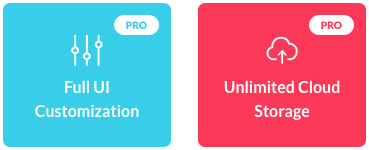

Dot - App, Software and SaaS Product HTML Template
- Template name: Dot
- Author: HarbourThemes
Introduction
Thank you for purchasing this HTML template!
Please read present documentation before installation. We are happy to help you, if you have any question about the template - please use special form on the themeforest.net.
If you like this template, please rate it on Themeforest - your opinion is very important to us. To rate this item, go to your Downloads page on Themeforest, then next to this theme and click on a star rating you'd like to give us. We would be happy if you'll give us 5 stars.
Getting Started
For edit html/css/js/php files use any text editor. For example, free editor Notepad++.
For installing this template, there are a few requirements you need on your web server in order to get full functionality:
- PHP 5.2+
- PHP Mail Support
Also JavaScript must be enabled in browser. If user does not have JavaScript enabled on his browser, the site won't load and message will be displayed, informing them of the problem.
To install this template on your web server, download the archive from Themeforest and unzip to the local disk on your computer. There will be two folders: "Documentation" folder, and "HTML" folder with the template files. Next step is to upload the template files to your server. Using an any FTP Client (for example, Filezilla), upload necessary contents of the "HTML" folder to your server directory.
This is not a Wordpress theme, so cannot be installed with Wordpress.
HTML Structure
HTML Files
This template include 20 HTML files:
| File | Description |
|---|---|
| index-1.html | Index page version 1 |
| index-2.html | Index page version 2 |
| index-3.html | Index page version 3 |
| index-4.html | Index page version 4 |
| index-5.html | Index page version 5 |
| index-6.html | Index page version 6 |
| index-7.html | Index page version 7 |
| index-8.html | Index page version 8 |
| index-9.html | Index page version 9 |
| index-10.html | Index page version 10 |
| blocks/about.html | Page with "about" blocks |
| blocks/download.html | Page with "download" blocks |
| blocks/faq.html | Page with "faq" blocks |
| blocks/features.html | Page with "features" blocks |
| blocks/forms.html | Page with "forms" blocks |
| blocks/other.html | Page with "other" blocks |
| blocks/prices.html | Page with "prices" blocks |
| blocks/reviews.html | Page with "reviews" blocks |
| blocks/team.html | Page with "team" blocks |
| page/simple-page.html | Simple page |
General HTML structure
Here is the general structure:
<html lang="en">
<head></head>
<body>
<div id="page" class="site">
<header id="masthead" class="site-header">
<!-- Header -->
</header>
<div id="content" class="site-content">
<div id="primary" class="content-area">
<main id="main" class="site-main">
<section>
<!-- Block with content -->
</section>
</main>
</div>
</div>
<footer id="colophon" class="container-fluid site-footer">
<!-- Footer content -->
</footer>
</div>
</body>CSS
This template include 11 CSS files:
| File | Description |
|---|---|
| aos.css | Styles for animation |
| bootstrap.css | Base styles for Bootstrap framework |
| font-awesome.css | Base styles for FontAwesome icon font |
| ie.css | Styles for old IE |
| magnific-popup.css | Base styles for popup |
| owl.carousel.css | Base styles for carousel |
| owl.theme.default.css | Additional styles for carousel |
| simple-line-icons.css | Base styles for Simple Line Icons font |
| style.css | Common css styles for this template |
| colors/color-1.css | Color scheme 1 |
| colors/color-2.css | Color scheme 2 |
style.css contains Table of content:
/*---------------------------------------------
[Table of contents]
1. Base Styles
2. Typography and Placeholders
3. Preloader
4. Buttons
5. Navigation
6. Header
7. About
8. Features
9. Prices
10. Partners
11. Reviews
12. CTA
13. FAQ
14. Video
15. Download
16. Team
17. Counter
18. How To Use
19. Contact Form
20. Integration
21. Newsletter
22. Latest Posts
23. Showcase
24. Footer
25. Pages
---------------------------------------------*/Colors
This template include 2 color schemes:
| File | Description |
|---|---|
| colors/color-1.css | Blue and red |
| colors/color-2.css | Dark Blue and pink |
Each main page section can have its own background color. The template provides two background colors: white or dark. By default, the section has a light background, to add a dark background, add a color-block class to the tag <section>.
<!-- Default white background color -->
<section id="about---1" class="container-fluid section-block about-1">...</section>
<!-- Dark background color -->
<section id="about---1" class="container-fluid section-block about-1 color-block">...</section>Features blocks can have one of two colors: primary or secondary. For the primary color use feature-box-primary class, for the secondary color use feature-box-second class.
<!-- Primary color -->
<div class="feature-box feature-box-primary">...</div>
<!-- Secondary color -->
<div class="feature-box feature-box-second">...</div>Also badges in features blocks and in headers can have any of two colors.
<!-- Badge primary color -->
<span class="badge badge-primary">...</span>
<!-- Badge secondary color -->
<block with contentspan class="badge badge-second">...</span>SCSS
This template include 8 SCSS files:
| File | Description |
|---|---|
| animations.scss | File with css animations |
| base.scss | Common scss styles for this template |
| style.scss | Main scss file |
| navigation.scss | Styles for navigation menu |
| typography.scss | Styles for typography |
| variables.scss | File with variables |
| colors/color-1.css | Color scheme 1 |
| colors/color-2.css | Color scheme 2 |
JavaScript
This template include 13 javascript files:
| File | Description |
|---|---|
| aos.js | Animate on scroll library |
| bootstrap.min.js | Scripts for bootstrap framework |
| bootstrap-hover-dropdown.js | Plugin for Bootstrap dropdowns to activate on hover |
| html5shiv.js | This script is the defacto way to enable use of HTML5 sectioning elements in legacy IE |
| init.js | Initialisation plugins |
| jquery.min.js | jQuery library |
| init-for-ie.js | Initialisation plugins only for IE |
| magnific-popup.js | Responsive lightbox |
| modernizr.js | JavaScript library that detects HTML5 and CSS3 features in the user's browser |
| owl.carousel.min.js | Responsive carousel slider plugin |
| parallax.js | Parallax effect |
| placeholders.js | Fix placeholders for IE |
| respond.min.js | A fast and lightweight polyfill for min/max-width CSS3 Media Queries |
Fonts and Icons
Fonts
Font used in the template:
<link href="https://fonts.googleapis.com/css?family=Lato:400,700,900" rel="stylesheet">- Link on font: Lato
Font Awesome
This template include Font Awesome v.4.7.0
Example use with class fa-database:
<i class="fa fa-database" aria-hidden="true"></i>Simple Line Icons
Also this template include Simple Line Icons
Example use with class icon-user:
<i class="icon-user"></i>FAQ
Forms
This template contains contact and subscription form. All you need is to replace your actual e-mail address and the subject. An e-mail will be sent at your e-mail adress with subject you choose every time when user send message. Open the contact.php / newsletter.php / header-newsletter.php in the root and replace all instances of "__YOUR_EMAIL__" with your email address and "__SUBJECT__" with desired email subject.
$address = "__YOUR_EMAIL__";
$subject = "__SUBJECT__";| File | Description |
|---|---|
| contact.php | Contact form |
| newsletter.php | Subscription form |
| header-newsletter.php | Subscription form in header |
These scripts need PHP support and may not work on a personal computer without running Apache server or similar server.
After changes are made, it's necessary to make sure the form works properly.
Credits
CSS and Script
- AOS
- Bootstrap
- Dropdown on Hover Plugin
- html5shiv.js
- jQuery
- Magnific popup
- Modernizr
- Owl Carousel
- Parallax
- Placeholders.js
- Respond